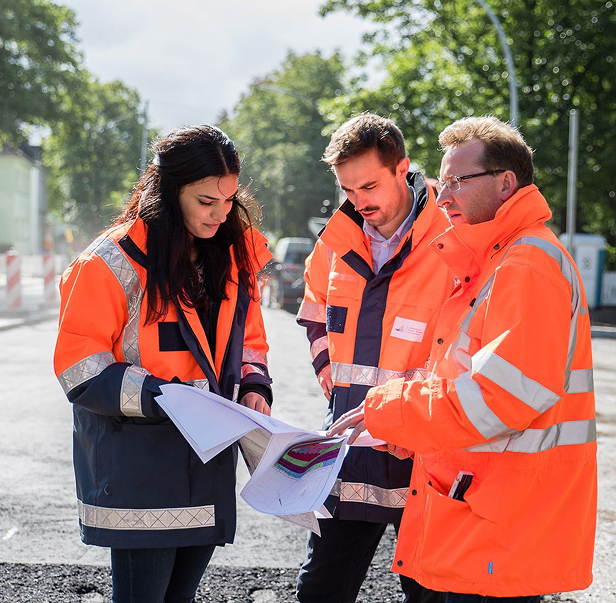
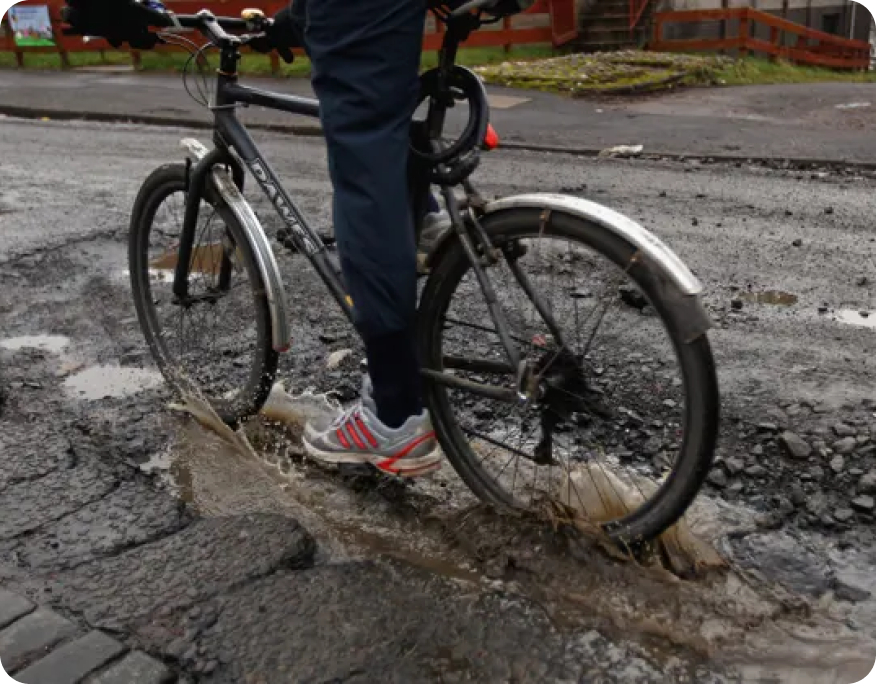
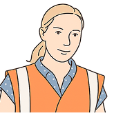
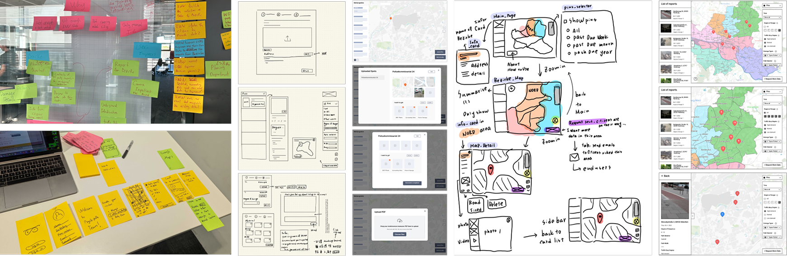

Product Overview:
BumpHunter is an AI-assisted service concept for Landesbetrieb Straßen, Brücken und Gewässer (LSBG), designed to turn citizen feedback into structured maintenance insight. By combining Google Maps, Strava activity data, and city weather information, the system helps engineers identify issues earlier, prioritize repairs, and make better-informed infrastructure decisions.
My Role:
As the interaction designer, I scoped two research tracks covering both residents and bicycle lane engineers, and facilitated 20+ cross-cultural interviews. Throughout the project, I translated findings into design principles, built high-fidelity prototypes, and used rolling research to validate functionality and usability. I also aligned a highly international team around interaction patterns that fit Hamburg's local context.
Timeline:
2023 · UnternehmerTUM, Munich

Project Background:
Inspection, maintenance, and planning of bicycle lanes require coordination across multiple government departments and inspection agencies. Although citizens can report issues, many still rely on traditional channels like email, resulting in fragmented information that is difficult to act on. Drone-based solutions can help in some situations, but their effectiveness drops significantly during winter.
Our Goal:
Design a lightweight system that turns scattered signals into timely, actionable updates on bicycle lane conditions, so engineers can reduce on-site inspections, coordinate more effectively across departments, and focus repairs where they matter most.
Preliminary Research:
We combined secondary research with primary data collection to understand the challenges and opportunities in bicycle lane planning and inspection.
Secondary research referenced literature on European bicycle lane infrastructure, including planning processes and inspection checkpoints (e.g., snow-related maintenance). Internal system operation documents from LSBG were also reviewed.
Primary research involved interviews with bicycle lane experts, engineers, and cycling enthusiasts, as well as focus groups and on-site observations.
Key interview quotes included:
"The Netherlands succeeded by building a comprehensive network of dedicated cycle paths.", Professor Chris Brunlett

"What is currently lacking is the feedback from citizens regarding their riding experiences on bicycle paths.", LSBG Bike Lane Engineer
"If my contributions truly help improve my neighborhood, I would be more willing to report.", Citizen
Key Insights:
Research showed that engineers lacked detailed information about which road segments mattered most to citizens and how riders actually experienced them. At the same time, citizens wanted their reports to be acknowledged, creating an opportunity for a more proactive inspection process.
Persona:
Our research revealed 2 key roles shaping the bicycle lane planning and inspection process: the Citizen and the Engineer.
| Bicycle Lane / Road Engineer | Resident / Cyclist | |
| Key Focus | Maintenance and inspection efficiency | Reporting road conditions, improving neighborhoods |
| Key Features | Technical inspection, data analysis | Submitting reports, tracking responses |
| Needs | Clear citizen feedback on road quality and priority segments | Assurance that feedback is heard and acted on |
While their perspectives differ, both groups faced the same structural gaps: limited communication, incomplete data, and no effective channel for exchanging information in ways that could meaningfully shape planning decisions.
Working Across Languages with AI Tools
Service Blueprint:
The service blueprint reframed maintenance as a two-way loop between engineers and residents. Engineers used maps to identify risk, traffic patterns, and likely maintenance priorities; citizens responded with location-specific reports, photos, and riding feedback. Together, these inputs turned scattered observations into a clearer basis for inspection and repair decisions.
The following sections show how the tool helps engineers assess maintenance priorities through maps and request targeted bicycle lane information from citizens when more context is needed.
Two Styles of Information Visualization:
Map View:
Map View enables engineers to quickly pinpoint priority areas for bicycle lane maintenance by visualizing damage severity, report density, and traffic levels. Color-coded markers make it easy to distinguish between extremely dangerous, dangerous, and minor issues, while traffic overlays reveal usage intensity. This combination helps engineers decide not just where intervention is most urgent, but also where repairs will have the greatest impact.
Report View:
Report View transforms citizen feedback into structured, actionable data, presenting an at-a-glance summary of bicycle lane conditions by district. For example, in Bergstedt, the Uncomfortable rate is 60% and the Dangerous rate is 70%, with key issues including low road traction, numerous potholes, and hazardous obstacles like tree branches. The view also shows report counts and traffic demand distribution (High 30.5%, Medium 4.5%, Low 65%), enabling engineers to quickly gauge both usage and risk levels.
Get Road Usage Information from Citizens:
Send Mission:
When engineers need more context to assess a specific area, they can use Send Mission to directly engage local residents. This feature sends targeted requests to citizens in the program, asking them to capture photos, record observations, and provide detailed feedback about the road segment in question. By gathering on-the-ground insights from actual users, engineers can validate existing data, fill in missing details, and make more accurate maintenance or planning decisions.
Citizen-Assisted Reporting of Bicycle Routes:
Capture cycling experience with simple clicks:
Hamburg residents can play an active role in improving local cycling infrastructure by sharing real-world road usage feedback via the Road Usage Reporting Website. Each submission helps engineers better understand on-the-ground conditions and prioritize repairs that matter most to the community.
How it works:
With just a few steps, residents can transform their daily riding experiences into actionable insights, directly influencing maintenance priorities and ensuring safer, more comfortable bike lanes.
Team Collaboration & Workflow
We ran Agile sprints with weekly showcases and testing, using story mapping to keep the work grounded. Most collaboration happened in Figma, with Adobe tools supporting production details. I also brought AI into the workflow to accelerate early communication artifacts and keep experiments legible to the wider team.

Testing, Iterating, Failing, Partnering
The most memorable part of this project was learning how differently Munich and Hamburg approached cycling infrastructure from the contexts I already knew. I once suggested posting flyers on utility poles, only to learn Munich had long buried its cables. That moment stayed with me. Working with such a diverse team sharpened my ability to spot blind spots, absorb feedback quickly, and refine ideas collaboratively across cultures.